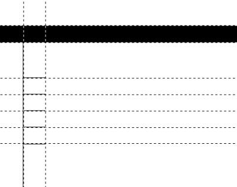

Selekcje, œcie¿ki oraz warstwy
Kluczem do opanowania GIMPa jest bieg³e pos³ugiwanie siê
selekcjami, œcie¿kami oraz warstwami.
Ka¿de z tych narzêdzi znajduje swoje zastosowanie
podczas tworzenia witryn internetowych
i jest konieczne przy bardziej z³o¿onych projektach.
Zanim przejdziemy do wykonywania æwiczeñ,
zatrzymajmy siê przy operacjach ³¹cz¹cych œcie¿ki, warstwy i selekcje.
Rozpocznijmy od przekszta³cania selekcji w warstwê i na odwrót.
Przekszta³cenie selekcji w warstwê mo¿emy wykonaæ na dwa sposoby:
stosuj¹c operacjê kopiuj/wklej lub wykorzystuj¹c technikê ci¹gnij-upuœæ.
W obydwu przypadkach mamy do czynienia z tzw. p³ywaj¹cym zaznaczeniem.
P³ywaj¹ce zaznaczenie mo¿emy zakotwiczyæ (tj. umieœciæ) na aktywnej warstwie lub
przekszta³ciæ w now¹ warstwê.
Tworzenie p³ywaj¹cej selekcji czêsto wprawia pocz¹tkuj¹cych u¿ytkowników GIMPa
w zak³opotanie. Pamiêtajmy, ¿e operacja cofnij usunie wszelkie zmiany w rysunku przywracaj¹c
poprzedni jego stan.
Zwróæmy równie¿ uwagê, ¿e operacja kopiuj/wklej umo¿liwia skopiowanie zawartoœci aktywnej warstwy lub
warstw widocznych.
Po wklejeniu, w obrazie pojawia siê p³ywaj¹ca selekcja o kszta³cie i zawartoœci odpowiadaj¹cej
bie¿¹cemu zaznaczeniu.
PrzejdŸmy do przekszta³cenia warstwy w selekcjê. Przekszta³cenie warstwy w selekcje ma na
celu zaznaczenie ca³ej nieprzezroczystej zawartoœci warstwy.
S³u¿y do tego opcja Warstwy | Zaznaczenie z kana³u alfa.
Drugim rodzajem przekszta³ceñ jest konwersja zaznaczenia w œcie¿kê i na odwrót.
Do tego s³u¿¹ przyciski Tworzy zaznaczenie ze œcie¿ki
oraz Tworzy œcie¿kê z zaznaczenia dostêpne w oknie dialogowym œcie¿ek.
£¹cz¹c przekszta³cenia zaznaczenia w warstwy oraz œcie¿ek w zaznaczenia
mo¿emy oczywiœcie uzyskaæ przekszta³cenie œcie¿ki w warstwê i na odwrót.
W celu przekszta³cenia œcie¿ki w warstwê wystarczy œcie¿kê przekszta³ciæ w zaznaczenie,
a nastêpnie wykonaæ operacje kopiuj/wklej. W ten sposób otrzymamy warstwê o kszta³cie
odpowiadaj¹cym kszta³cie œcie¿ki.
Przekszta³cenie odwrotne, warstwy w œcie¿kê przebiega nastêpuj¹co:
zaznaczamy ca³¹ warstwê (Warstwy | Zaznaczenie z kana³u alfa),
a nastêpnie przekszta³camy zaznaczenie w œcie¿kê.
Otrzymana œcie¿ka bêdzie mia³a identyczny kszta³t jak aktywna warstwa.
Jak praktycznie wykorzystaæ opisane przekszta³cenia? Na przyk³ad do tworzenia œcie¿ek
o kszta³cie okrêgu lub kwadratu. Poniewa¿ bardzo ³atwo otrzymaæ selekcjê okr¹g³¹ lub kwadratow¹,
zatem najprostsza metoda otrzymania œcie¿ki o takim kszta³cie
polega na uzyskaniu zaznaczenia i przekszta³ceniu go w œcie¿kê.
Tyle, jeœli chodzi o przekszta³cenia. PrzejdŸmy do drugiej wa¿nej
sprawy, jak¹ jest zapamiêtywanie selekcji.
Wprawdzie kszta³t selekcji moglibyœmy zapamiêtaæ w œcie¿ce,
nie jest to jednak wygodne, poniewa¿ powoduje utracenie czêœci informacji dotycz¹cych
zaznaczenia.
Zaznaczenia charakteryzuj¹ siê dwoma cechami: kszta³tem
oraz g³adkoœci¹. Zapamiêtanie selekcji w postaci œcie¿ki powoduje
utratê informacji o g³adkoœci.
Do zapamiêtywania selekcji nale¿y wykorzystaæ kana³y.
Dodatkow¹ zalet¹ jest mo¿liwoœæ ³atwego ³¹czenia zapamiêtanych œcie¿ek.
Klawisze Ctrl oraz Shift pomog¹ uzyskaæ sumê, ró¿nicê lub
czêœæ wspóln¹ kilku zapamiêtanych zaznaczeñ.
Zapamiêtanie bie¿¹cej selekcji wykonamy klikaj¹c opcjê
Zaznaczenie | Zapisz do kana³u.
Ostatni¹ wa¿n¹ rzecz¹, na jak¹ chcia³bym zwróciæ uwagê we wstêpie
jest fakt, ¿e wszystkie operacje edytorskie dotycz¹ aktualnej selekcji oraz warstwy.
Jeœli na przyk³ad malujemy pêdzlem, wówczas œlady pêdzla zostaj¹ umieszczone na
warstwie aktywnej nawet, jeœli jest ona niewidoczna.
Ponadto pêdzel nie wyjedzie poza brzeg aktywnej warstwy ani bie¿¹cej selekcji.
Narzêdzia edycyjne (np. pêdzel, o³ówek, wype³nianie farb¹)
maluj¹ po aktywnej warstwie.
Dzieje siê tak nawet wówczas, gdy jest ona niewidoczna.
Zasiêg narzêdzia jest ograniczony przez rozmiar aktywnej warstwy oraz selekcji.
Ramka 1.
Œcie¿ki mo¿emy przekszta³caæ w selekcje, zaœ selekcje - w œcie¿ki.
Ponadto mo¿liwe jest dokonanie konwersji zaznaczenia w kszta³t warstwy
oraz nieprzezroczystej zawartoœci warstwy w zaznaczenie.
Ramka 2.
Selekcje charakteryzuje kszta³t oraz miêkkoœæ krawêdzi.
Do zapisywania selekcji s³u¿¹ kana³y.
Kilka selekcji zapisanych w kana³ach ³atwo po³¹czyæ wykonuj¹c sumê, ró¿nicê b¹dŸ czêœæ wspóln¹
za pomoc¹ klawiszy Ctrl oraz Shift.
Ramka 3.
Nag³ówek strony WWW
Wykonanie przedstawionych nag³ówków
wymaga umiejêtnoœci operowania warstwami, dodawania efektu cienia oraz
tworzenia ozdobnych napisów skryptami Script-Fu | Loga.
Æwiczenie 1
Wykonaj nag³ówek strony www "Fotogaleria" przedstawiony na rysunku 1.
Przedstawiony nag³ówek sk³ada siê z czterech elementów:
napisu oraz trzech ma³ych fotografii. Ka¿dy z tych elementów umieszczamy na osobnej warstwie.
£¹cznie obraz posiada wiêc piêæ warstw: bia³e t³o, napis tytu³owy oraz trzy warstwy ze zdjêciami.
Napis "FOTOGALERIA" wykonujemy przy u¿yciu skryptu
Dodatki | Script-Fu | Loga | Proste I. Wybrana czcionka to Tachoma o kolorze niebieskim.
Po wykonaniu napisu, wy³¹czamy widocznoœæ warstwy t³o, sp³aszczamy obraz i kopiujemy do
przygotowywanego nag³ówka.
Nastêpnie przystêpujemy do wklejenia trzech miniaturowych fotografii.
Zauwa¿my, ¿e ka¿da z fotografii posiada niewielk¹ niebiesk¹ krawêdŸ.
KrawêdŸ dodamy do obrazu korzystaj¹c ze skryptu
Script-Fu | Dekoracje | Dodaj krawêdŸ.
Kolejno dla ka¿dej fotografii wykonujemy nastêpuj¹ca procedurê:
otwieramy obraz, skalujemy do rozmiarów 200x150 pikseli, dodajemy jednopikselow¹ krawêdŸ,
sp³aszczamy obraz (krawêdŸ znajduje siê na osobnej warstwie), kopiujemy i wklejamy do
przygotowywanego nag³ówka.
Po wklejeniu skalujemy wklejon¹ warstwê zmniejszaj¹c nieco jej rozmiary w taki sposób, by ka¿da
z wklejonych miniatur mia³a inny rozmiar.
Do skalowania warstw s³u¿y narzêdzie przekszta³ceñ: Obracanie, skalowanie, œcinanie, perspektywa.
Domyœlnie aktywn¹ opcj¹ jest obracanie. Dzia³anie narzêdzia zmienimy podwójnie klikaj¹c w
jego przycisk w oknie g³ównym GIMPa.
Rys. 1. Baner serwisu "Fotogaleria". Æwiczenie 2
Wykonaj nag³ówek serwisu poœwiêconego klockom Lego.
Nag³ówek ten jest nieco bardziej skomplikowany od nag³ówka fotogalerii.
Posiada on ³¹cznie 10 warstw: dwie warstwy na napisy "Lego" oraz "technic",
dwie warstwy na rysunki helikoptera i samochodu. Ka¿dy z tych elementów posiada
cieñ umieszczony na osobnej warstwie, co daje ³¹cznie osiem warstw.
Dodatkowo rysunek posiada bia³e t³o oraz warstwê zawieraj¹c¹ wype³nienie szarym gradientem.
Po utworzeniu nowego rysunku dodajemy do niego now¹ pust¹ warstwê o rozmiarze równym rozmiarowi
rysunku. Warstwê tê wype³niamy szarym gradientem liniowym.
Nastêpnie dodajemy do obrazu napisy. Wykorzystany skrypt to ponownie
Dodatki | Script-Fu | Loga | Proste I, zaœ czcionka to
Comic Sans MS.
Po wklejeniu napisów przystêpujemy do wyciêcia samolotu oraz helikoptera z instrukcji Lego.
Do wyciêcia elementów wykorzystujemy œcie¿ki. Gdy œcie¿ka jest gotowa, przekszta³camy
j¹ w zaznaczenie, po czym wykonujemy operacjê kopiuj/wklej.
Po wklejeniu helikoptera skalujemy go do odpowiednich rozmiarów.
Podobnie postêpujemy z samochodem.
Teraz pozosta³o ju¿ tylko dodanie cienia czterech elementów: samolotu, samochodu oraz dwóch napisów.
Ustalamy aktywn¹ warstw¹ warstwê z napisem "Lego", a nastêpnie wykonujemy zaznaczenie
z kana³u alfa, po czym
uruchamiamy skrypt Script-Fu | Cieñ | Rzucany cieñ.
W identyczny sposób dodajemy cieñ pozosta³ym trzem elementom.
Rys. 2. Nag³ówek witryny "Lego Technic". Projekt szaty graficznej witryny WWW
Æwiczenie 3
Przygotuj stronê tytu³ow¹ firmy "BEST" przedstawion¹ na rysunku 3.
Przedstawiona strona sk³ada siê z niebiesko-bia³ego t³a,
nazwy opcji, czarnych kropek umieszczonych przy opcjach
oraz napisu prezentuj¹cego nazwê firmy.
Pracê rozpoczynamy od przygotowania t³a. Na nowym, pustym
rysunku umieszczamy prowadnice wyznaczaj¹ce œrodek ko³a stanowi¹cego t³o.
Nastêpnie zaznaczamy du¿e ko³o, po czym wykorzystuj¹c operacjê ³¹czenia zaznaczeñ
dodajemy do ko³a prostok¹t. Teraz zaznaczony obszar powinien odpowiadaæ
bia³emu fragmentowi t³a strony.
Rysunek 3.b przedstawia dwa zmniejszone zaznaczenia, które tworz¹ bia³e t³o.
W celu wype³nienia niebieskiego obszaru farb¹ odwracamy zaznaczenie, po czym
dodajemy now¹, przezroczyst¹ warstwê i wype³niamy zaznaczenie na nowej warstwie niebiesk¹ farb¹.
Powinniœmy otrzymaæ niebieski ³uk stanowi¹cy t³o.
Teraz przystêpujemy do dodania opcji "Informacje", "Us³ugi", "Serwis", "Sklep".
Opcje dodajemy za pomoc¹ narzêdzia tekstowego.
W dok³adnym pozycjonowaniu napisów pomog¹ nam prowadnice.
Kolejny element strony to czarne kropki znajduj¹ce siê z lewej strony opcji.
Kropki te wykonujemy za pomoc¹ zaznaczenia eliptycznego.
Klawisze Ctrl oraz Shift modyfikuj¹ dzia³anie narzêdzia
do zaznaczania eliptycznych obszarów w taki sposób,
¿e zaznaczane jest ko³o o zadanym œrodku.
Wszystkie kropki umieszczamy na jednej warstwie.
Po dodaniu do rysunku nowej warstwy ustawiamy prowadnice,
nastêpnie zaznaczamy ko³o i wype³niamy je farb¹.
Ostatni element strony to nazwa firmy "BEST".
Logo firmy tworzymy wykorzystuj¹c narzêdzie tekstowe.
Po dodaniu na osobnej warstwie napisu "BEST" tworzymy zaznaczenie z kana³u alfa obejmuj¹ce ca³y napis.
Zaznaczenie powiêkszamy, a nastêpnie wype³niamy niebiesk¹ farb¹ (na nowej warstwie).
Tak powstaje niebieskie t³o nazwy firmy.
Rys. 3. Strona firmy "BEST". Æwiczenie 4
Przygotuj szkielet strony studia fotograficznego przedstawiony na rysunku 4.
Strona "Studio fotograficzne" zawiera: t³o sk³adaj¹ce siê z kratki ilustracji,
³uk z lewej strony, cieñ ³uku oraz ozdobny napis.
Pierwszym etapem naszej pracy bêdzie przygotowanie kratki szesnastu
miniaturowych ilustracji. Æwiczenie to zosta³o szczegó³owo opisane w poprzednim odcinku.
Nastêpnie do strony dodajemy ³uk. Tworzymy now¹ warstwê, pomniejszamy kilkukrotnie widok (klawisz -),
i zaznaczamy ko³o o œrodku le¿¹cym na lewo od rysunku i o du¿ym promieniu.
Tak uzyskane zaznaczenie odwracamy, i wype³niamy bia³¹ farb¹.
Jeœli zmniejszymy nieprzepuszczalnoœæ warstwy do oko³o 80%, oraz wy³¹czymy widocznoœæ innych warstw
(Shift-klik w wybran¹ warstwê), wówczas powinniœmy otrzymaæ obraz przedstawiony na rysunku
4.b.
Kolejnym etapem pracy jest dodanie cienia rzucanego przez ³uk.
Ponownie zaznaczamy ³uk wykonuj¹c operacjê zaznaczenie z kana³u alfa
(dla warstwy z ³ukiem), po czym odwracamy zaznaczenie.
Teraz wykonujemy skrypt rzucaj¹cy cieñ.
Ostatnim elementem, jaki dodajemy do rysunku jest napis "Fotogaleria" tworzony jednym ze skryptów
Dodatki | Script-Fu | Loga.
 Rys. 4. Serwis studia fotograficznego. Æwiczenie 5
Przygotuj stronê firmy "Maszyny" przedstawion¹ na rysunku 5.
Strona sk³ada siê z nag³ówka oraz menu.
Nag³ówek strony zawiera dwa d³ugie prostok¹ty rzucaj¹ce cieñ, na których umieszczono miniaturowe fotografie
oraz napisy.
Menu strony zawiera kilka prostok¹tów rzucaj¹cych cieñ i napisy.
G³ówn¹ trudnoœæ w wykonaniu strony stanowi¹ prostok¹ty.
Prostok¹ty tworzymy za pomoc¹ selekcji prostok¹tnej z wykorzystaniem prowadnic.
Pracê rozpoczynamy od dok³adnego ustawienia prowadnic, po czym kolejno zaznaczamy prostok¹ty
tak jak to pokazano na rysunku 5.b.
Prostok¹ty wype³niamy gradientem liniowym, a nastêpnie dodajemy do rysunku cieñ.
Kolejnym krokiem jest dodanie do rysunku miniaturowych fotografii koparki oraz lokomotywy.
Otwieramy plik przedstawiaj¹cy koparkê, zaznaczamy ca³oœæ (Ctrl+A), kopiujemy (Ctrl+C),
wklejamy do tworzonej strony firmy "Maszyny" (Ctrl+V) i umieszczamy na osobnej warstwie
(Ctrl+L, Ctrl+N).
Tak umieszczon¹ warstwê skalujemy wykorzystuj¹c opcjê Narzêdzia | Przekszta³cenia | Przekszta³æ
(w zale¿noœci od ustawieñ programu mo¿e byæ konieczna zmiana bie¿¹cego przekszta³cenia
Narzêdzia | Okna dialogowe | Opcje narzêdzia).
Po przeskalowaniu zdjêcia koparki do ¿¹danych rozmiarów
zmieniamy kolorystykê warstwy stosuj¹c najpierw opcjê
Obraz | Kolory | Desaturacja, a nastêpnie okno dialogowe
Obraz | Kolory | Balans kolorów.
Pamiêtajmy, ¿e zarówno desaturacja jak i balans kolorów odnosz¹ siê do bie¿¹cej warstwy.
Po dodaniu miniaturki z lokomotyw¹ pozosta³o nam jedynie umieszczenie napisów i
efektu cienia, jaki rzucaj¹ napisy.
Stosujemy narzêdzie tekstowe oraz skrypt Rzucany cieñ.
Rys. 5. Strona spó³ki "Maszyny S. C.". Æwiczenie 6
Przygotuj stronê tytu³ow¹ serwisu poœwiêconego jêzykowi "Logo"
przedstawion¹ na rysunku 6.
Strona sk³ada siê z kilku napisów, ramki tworz¹cej menu i posiada niebieskie t³o.
Po utworzeniu nowego obrazu, zaznaczamy ca³¹ warstwê t³o (Ctrl+A)
i wype³niamy j¹ kolorem niebieskim (Skrót Ctrl+.).
Ramkê wykonujemy z wykorzystaniem œcie¿ek.
Ustalamy prowadnice tak jak to przedstawiono na rysunku 6.c,
po czym dodajemy do rysunku œcie¿kê widoczn¹ na rysunku 6.b.
Gdy œcie¿ka jest gotowa, przekszta³camy j¹ w zaznaczenie, a nastêpnie wype³niamy
kolorem ciemnoniebieskim. Po wype³nieniu kolorem obrysowujemy œcie¿kê
naciskaj¹c przycisk Rysuje œcie¿kê znajduj¹cy siê w dolnej czêœci okna dialogowego œcie¿ek.
Ponownie przekszta³camy œcie¿kê w zaznaczenie i dodajemy efekt cienia.
Pozosta³o nam jeszcze dodanie napisów opcji.
Skorzystanie z narzêdzia tekstowego i dodanie efektu cienia do napisów koñczy æwiczenie.
 Rys. 6. Zbiór zadañ z jêzyka Logo. Æwiczenie 7
Przygotuj stronê tytu³ow¹ serwisu poœwiêconego jêzykowi "Logo"
przedstawion¹ na rysunku 7.
Æwiczenie to wykonujemy niemal identycznie jak æwiczenie poprzednie.
Rozpoczynamy od t³a. Strona posiada t³o zawieraj¹ce dwuliniowy gradient
przechodz¹cy od koloru ¿ó³tego poprzez bia³y z powrotem do ¿ó³tego.
Po wyœwietleniu okna dialogowego modyfikuj¹cego w³aœciwoœci gradientu ustalamy
Gradient: dwuliniowy.
Gdy t³o jest gotowe dodajemy do rysunku œcie¿kê.
Kszta³t œcie¿ki zosta³ przedstawiony na rysunku 7.b.
Gotow¹ œcie¿kê przekszta³camy w zaznaczenie i wype³niamy kolorem ¿ó³tym,
po czym dodajemy efekt cienia.
Na zakoñczenie, wykorzystuj¹c narzêdzie tekstowe dodajemy nazwy opcji.
Rys. 7. Druga wersja zbioru zadañ "Logo". Æwiczenie 8
Przygotuj stronê poœwiêcona programowi "NotH" widoczn¹ na rysunku 8.
Æwiczenie numer 8 zawiera nastêpuj¹ce elementy:
czarny poziomy pas, cienk¹, czarn¹ kreskê pionow¹ z poziomymi odnogami,
dwukolorowy napis "NotH" oraz napis gajdaw.
Æwiczenie rozpoczynamy od umiejscowienia prowadnic tam, gdzie ma siê znaleŸæ czarny poziomy pas i
cienkie czarne kreski. Umiejscowienie prowadnic ilustruje rysunek 8.c.
Nastêpnie rysujemy czarny pas.
Wykorzystujemy do tego zaznaczenie prostok¹tne oraz wype³nianie farb¹.
W celu dodania delikatnego cienia, jaki rzuca czarny pas, wykonujemy skrypt Rzucany cieñ.
Teraz przechodzimy do cienkich kresek. Rysujemy je wykorzystuj¹c œcie¿ki.
Dodajemy do rysunku szeœæ œcie¿ek, bêd¹cych liniami prostymi tak,
by po wykonaniu operacji Rysuj œcie¿kê otrzymaæ kreski przedstawione na rysunku 8.b.
Po narysowaniu cienkich czarnych kresek na osobnej warstwie wykonujemy operacjê
Zaznaczenie z kana³u alfa, po czym wykonujemy skrypt tworz¹cy cieñ zaznaczenia.
W ten sposób kreski zostan¹ wzbogacone o cieñ.
Ostatni etap pracy to dwukolorowy napis "NotH". Napis ten
tworzymy nastêpuj¹co. Dodajemy czarny napis "NotH" na osobnej warstwie.
Zaznaczamy ca³y napis stosuj¹c opcjê Zaznaczenie z kana³u alfa.
Wykorzystuj¹c prowadnice, zaznaczenie prostok¹tne oraz klawisz Ctrl usuwamy górn¹ po³owê
zaznaczenia. Dodajemy now¹ warstwê, po czym wype³niamy na niej selekcjê
(pokrywaj¹ca w tym momencie doln¹ czêœæ napisu "NotH") kolorem bia³ym.
Powinnyœmy otrzymaæ napis dwukolorowy.
Cieñ napisu "NotH" dodajmy zaznaczaj¹c ca³y napis
(ponownie selekcja z kana³u alfa dla warstwy z czarnym napisem "NotH")
i uruchamiaj¹c skrypt Rzucany cieñ
Æwiczenie koñczymy dodaj¹c napis "gajdaw" w lewej czêœci strony.
 Rys. 8. Strona programu "NotH". Æwiczenie 9
Przygotuj witrynê sklepu "Animal" widoczn¹ na rysunku 9.
Æwiczenie to prezentuje wykorzystanie wspomnianej we wstêpie
metody zapisywania zaznaczeñ w kana³ach.
G³ównym elementem strony jest ¿ó³to-czerwone t³o.
Ponadto strona sk³ada siê z napisów tytu³owych "Animal" oraz "sklep zoologiczny" .
Napisy te s¹ nieco obrócone.
W dolnej czêœci strony zosta³y umieszczone napisy "gady", "ptaki", itd.
T³o strony wykonamy wykorzystuj¹c kana³y.
Wykonujemy zaznaczenie widoczne na rysunku 9.b. Zaznaczenie to jest du¿ym okrêgiem, którego
œrodek le¿y daleko poza praw¹ krawêdzi¹ obrazu. Wykonane zaznaczenie
odwracamy (Zaznaczenie | Odwróæ), a nastêpnie
na nowej warstwie wype³niamy kolorem czerwonym. Powinniœmy otrzymaæ obraz widoczny na rysunku
9.b.
Bie¿¹ce zaznaczenie zapisujemy wykonuj¹c operacjê Zaznaczenie | Zapisz do kana³u.
Przechodzimy do ³uku widocznego na rysunku 9.c.
Wykonujemy zaznaczenie eliptyczne o kszta³cie ko³a, którego œrodek le¿y daleko poni¿ej dolnej
krawêdzi obrazu.
Nastêpnie zaznaczenie odwracamy i zapisujemy do kana³u (Zaznaczenie | Zapisz do kana³u).
Teraz dodajemy now¹ warstwê i wype³niamy j¹ kolorem czerwonym.
Górny ¿ó³ty naro¿nik namalujemy wykonuj¹c czêœæ wspólna dwóch zapamiêtanych zaznaczeñ.
Przechodzimy do okna kana³ów: Warstwy | Warstwy, kana³y i œcie¿ki, zak³adka Kana³y (skrót: Ctrl+L).
Wybieramy jedn¹ z zapamiêtanych selekcji i naciskamy przycisk Tworzy zaznaczenie z kana³u
dostêpny w dolnej czêœci okna dialogowego.
Powinniœmy otrzymaæ pierwsz¹ selekcjê. Nastêpnie przechodzimy na drug¹ selekcjê i przytrzymuj¹c klawisze
Ctrl oraz Shift (w stosunku do selekcji klawisze te tworz¹ czêœæ wspóln¹)
ponownie naciskamy guzik Tworzy zaznaczenie z kana³u. Otrzymane zaznaczenie
powinno odpowiadaæ górnemu, lewemu naro¿nikowi.
Dodajemy now¹ warstwê i wype³niamy zaznaczenie kolorem ¿ó³tym.
Dolny ¿ó³ty fragment strony to odwrócona suma dwóch pierwszych zaznaczeñ
przedstawionych na rysunkach 9.b oraz 9.c.
Zatem usuwamy zaznaczenie (Ctrl+Shift+A) i przechodzimy do okna kana³ów
(Ctrl+L).
Uzyskujemy zaznaczenie z pierwszego z zapamiêtanych kana³ów, po czym przechodzimy
do drugiego kana³u i przytrzymuj¹c klawisz Shift, który powoduje sumowanie zaznaczeñ,
naciskamy przycisk Tworzy zaznaczenie z kana³u.
Po odwróceniu, otrzymane zaznaczenie powinno pokrywaæ dolny ¿ó³ty fragment strony.
Dodajmy now¹ warstwê i wype³niamy zaznaczenie kolorem ¿ó³tym.
Powinniœmy otrzymaæ cztery warstwy, które przedstawiaj¹ t³o widoczne na rysunku 9.d.
Obrócone napisy "Animal" oraz "sklep zoologiczny" wykonujemy stosuj¹c narzêdzie
tekstowe i umieszczaj¹c napisy na osobnych warstwach.
Do obracania warstwy s³u¿y narzêdzie Obracanie, skalowanie, œcinanie, perspektywa.
Rys. 9. Witryna sklepu "Animal". Æwiczenie 10
Przygotuj stronê WWW poœwiêcon¹ literaturze przedstawion¹ na rysunku 10.
Strona ta sk³ada siê z nastêpuj¹cych elementów:
- t³o przedstawiaj¹ce obrócony tekst opowiadania "Zew krwi",
- br¹zowe t³o rozjaœnione w miejscach przeznaczonych na opcje i bledn¹ce ku do³owi,
- br¹zowe kreski oddzielaj¹ce nag³ówek strony, lewe oraz prawe menu,
- napisy.
Wykonanie æwiczenia rozpoczynamy od t³a strony. Otwieramy plik tekstowy z opowiadaniem "Zew krwi"
dowolnym edytorem (np. programem notatnik). Zwiêkszamy okno edytora na ca³y ekran, a nastêpnie kopiujemy
wygl¹d okna do schowka naciskaj¹c klawisze Alt-PrintScreen. Zawartoœæ okna zosta³a skopiowana do
schowka. Teraz w programie GIMP wykonujemy operacjê wklejania ze schowka:
Edycja | Wklej ze schowka. Poniewa¿ wklejony obraz zawiera oprócz tekstu powieœci
równie¿ ramkê okna i menu g³ówne, zatem zaznaczamy fragment obrazu zawieraj¹cy wy³¹cznie tekst utworu, kopiujemy
i wklejamy do przygotowywanej witryny. Wklejony obraz umieszczamy na osobnej warstwie.
Nastêpnie warstwê nieco obracamy i zmniejszamy jej nieprzepuszczalnoœæ.
W ten sposób otrzymaliœmy t³o witryny zawieraj¹ce tekst opowiadania.
Przystêpujemy do dodania br¹zowej poœwiaty znikaj¹cej ku do³owi.
Wykorzystuj¹c odpowiednio rozmieszczone prowadnice tworzymy zaznaczenie przedstawione na rysunku 10.b.
Zaznaczenie to sk³ada siê z trzech prostok¹tów. Po otrzymaniu zaznaczenia
bêd¹cego sum¹ trzech prostok¹tów wyg³adzamy zaznaczenie (Zaznaczenie | Wyg³adŸ),
po czym je odwracamy. Teraz zaznaczony obszar wype³niamy gradientem zmieniaj¹cym siê
od br¹zowego do bia³ego.
Nastêpnie wykorzystuj¹c prowadnice i œcie¿ki dodajemy do rysunku br¹zowe kreski.
Æwiczenie koñczymy umieszczaj¹c napisy "Literatura", "Autorzy", "Utwory", "Proza"
oraz "Poezja" wykonane skryptami z menu Loga.
Rys. 10. Serwis poœwiêcony literaturze. Æwiczenie 11
Przygotuj witrynê "TIK-TAK" przedstawion¹ na rysunku 11.
Witryna "TIK-TAK" sk³ada siê dwóch zielonych ³uków, napisu "TIK-TAK" oraz czterech fotografii.
Najtrudniejszym elementem s¹ dwa zielone ³uki.
£uk dolny wykonamy zaznaczaj¹c ko³o o du¿ym promieniu i o œrodku le¿¹cym du¿o poni¿ej dolnej
krawêdzi obrazu. Wspó³rzêdna X œrodka zaznaczenia wypada w po³owie szerokoœci obrazu.
Po otrzymaniu zaznaczenia wype³niamy je na osobnej warstwie kolorem zielonym.
Górny ³uk otrzymamy kopiuj¹c ³uk dolny i odpowiednio przekszta³caj¹c.
Zduplikujmy warstwê zawieraj¹c¹ dolny ³uk, a nastêpnie odbijmy j¹ pionowo
(Narzêdzia | Przekszta³cenia | Odbij; nale¿y przytrzymaæ klawisz Ctrl).
Jeœli teraz przesuniemy otrzyman¹ warstwê do góry i umieœcimy na œrodku strony
wówczas otrzymamy obraz przedstawiony na rysunku 11.b i sk³adaj¹cy siê z trzech warstw:
bia³ego t³a, dolnego ³uku i górnego ³uku.
Stosuj¹c narzêdzie tekstowe dodajemy do rysunku napis "TIK-TAK".
Ostatni etap pracy stanowi dodanie czterech kwadratowych fotografii.
Dla ka¿dej fotografii z osobna wykonujemy nastêpuj¹c¹ procedurê:
- otwieramy zdjêcie,
- skalujemy obraz (Obraz | Skaluj obraz) tak, by interesuj¹cy nas fragment fotografii
mieœci³ siê w kwadracie 150x150 pikseli,
- wykorzystuj¹c narzêdzie Kadrowanie i zmiana rozmiaru zmieniamy rozmiar obrazu
na 148x148 pikseli,
- dodajemy jednopikselow¹ ramkê do obrazu (Script-Fu | Dekoracje | Dodaj krawêdŸ);
dodanie ramki jednopiselowej zwiêkszy rozmiar obrazu do wymiarów 150x150px,
- sp³aszczamy obraz,
- usuwamy kolory: Obraz | Kolory | Desaturacja,
- zmieniamy balans kolorów Obraz | Kolory | Balans kolorów,
- kopiujemy obraz i wklejamy do przygotowywanej strony.
Po wklejeniu czterech jednobarwnych obrazów o rozmiarach 150x150 pikseli pozosta³o
jedynie dodanie prowadnic i odpowiednie rozmieszczenie wklejonych zdjêæ.
Rys. 11. Witryna "TIK-TAK". Æwiczenie 12
Przygotuj witrynê "Nadleœnictwo" przedstawion¹ na rysunku 12.
Witryna nadleœnictwo sk³ada siê z t³a,
napisu "Nadleœnictwo" i kwadratów znajduj¹cych siê z lewej strony,
z trzech pionowych fotografii drzew, napisów
"Zasoby", "Ludzie", "Lasy" znajduj¹cych siê na tle wype³nionym gradientem oraz
bia³ego kwadratu przeznaczonego na treœæ strony.
T³o strony stanowi zdjêcie o bladozielonych kolorach.
Na warstwie t³o umieszczamy fotografiê, nastêpnie dodajemy warstwê, któr¹ wype³niamy kolorem zielonym.
Warstwa zielona przys³ania warstwê ze zdjêciem.
Zmniejszaj¹c nieprzezroczystoœæ warstwy zielonej osi¹gniemy efekt widoczny na tle strony
"Nadleœnictwo".
Teraz wklejamy trzy wyciête fotografie drzew o wymiarach 100x300 pikseli.
Za pomoc¹ narzêdzia tekstowego pod fotografiami umieszczamy napisy.
T³o ka¿dego z napisów stanowi prostok¹t wype³niony gradientem.
Zaznaczamy prostok¹t o odpowiednim kszta³cie, dodajemy now¹ przezroczyst¹ warstwê
i wype³niamy j¹ gradientem. Tak otrzymane t³o przesuwamy pod warstwê z napisem.
Ostatni element witryny to bia³y kwadrat o rozmytym brzegu.
Zaznaczamy selekcjê kwadratow¹, rozmywamy jej brzeg, po czym na nowej warstwie
wlewamy w ni¹ kolor bia³y.
Rys. 12. Strona "Nadleœnictwo". Podsumowanie
Dzisiejsza seria æwiczeñ ³¹czy operacje na warstwach, selekcjach i œcie¿kach.
P³ynne wykonywanie zadañ takich jak kopiowanie i wklejanie fragmentów,
precyzyjne pozycjonowanie warstw, selekcji i œcie¿ek za pomoc¹ prowadnic,
skalowanie rysunków do ¿¹danych rozmiarów w taki sposób, by wymagany fragment ilustracji
by³ w ca³oœci umieszczony na przeskalowanym obrazie
stanowi abecad³o pracy projektanta strony WWW.
|